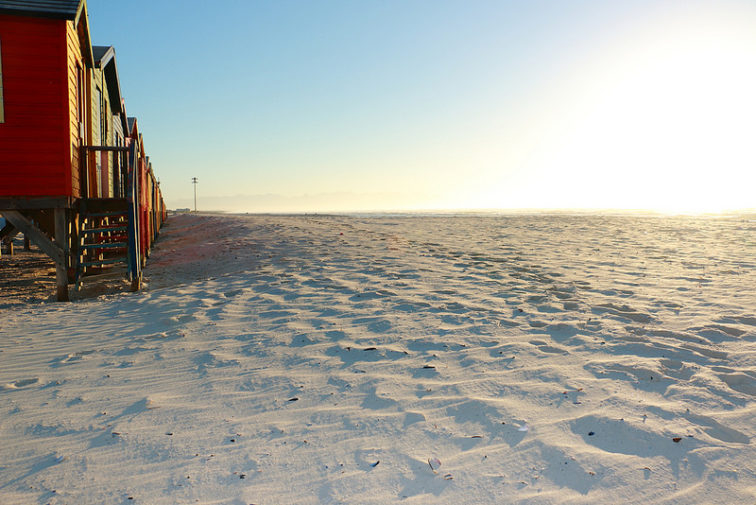
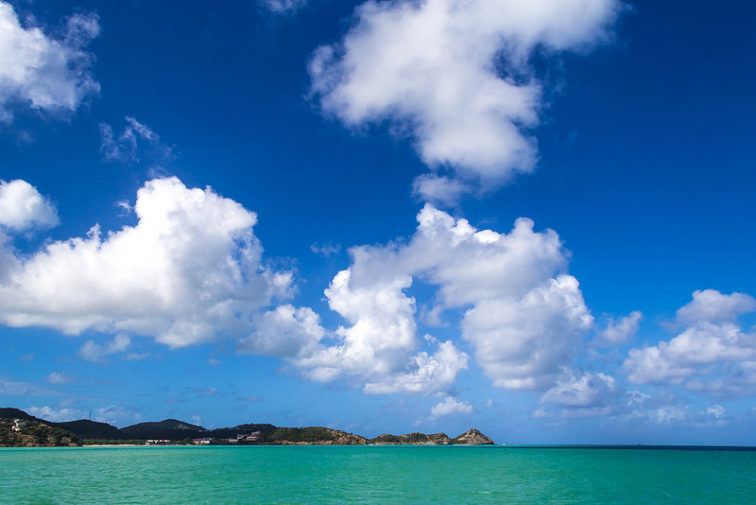
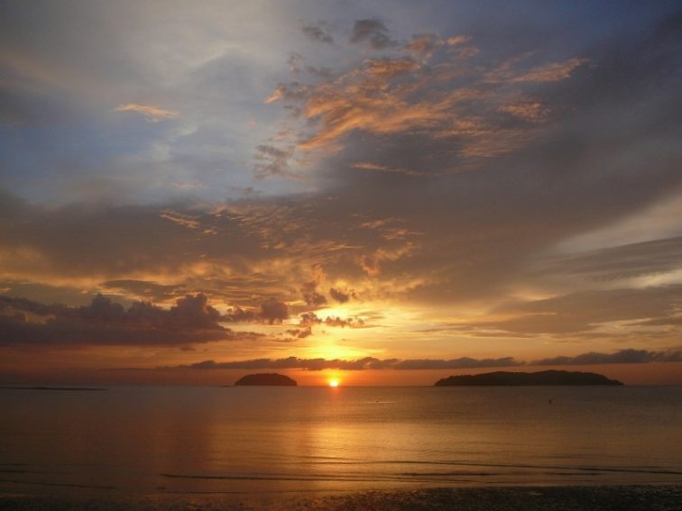

Destinos em destaque por continente
Destinos incríveis no Brasil
Parque Nacional da Chapada Diamantina (BA)
O Parque Nacional da Chapada Diamantina é um dos mais fascinantes parques naturais Brasileiros. O cenário montanhoso abriga uma extraordinária variedade de ecossistemas como Cerrado, Mata Atlântica, Campos rupestres, Caatinga.
Parque Estadual do Jalapão (TO)
O parque estadual do Jalapão é uma unidade de conservação brasileira de proteção integral à natureza localizada na região leste do estado do Tocantins. O território do parque, com uma área de 158 970,95 ha.
Parque Nacional de Aparados da Serra (SC)
O Parque Nacional de Aparados da Serra é uma unidade de conservação brasileira de proteção integral da natureza localizada na serra Geral, encampando os desfiladeiros na divisa natural entre os estados do Rio Grande do Sul e de Santa Catarina.
Destinos para você aproveitar o melhor verão
Cidade do Cabo – África do Sul
A famosa cidade portuária e seus arredores, onde há diversas vinícolas (você vai descobrir que, ao contrário do que pode pensar, vinhos não combinam apenas com inverno), é sempre uma boa ideia nos últimos e primeiros meses do ano. Escale a “montanha da Mesa” para ter uma vista maravilhosa do mar, observe as baleias ou aproveite um safari. A África do Sul é um destino romântico e, ao mesmo tempo, aventureiro.
Antigua – Antigua e Barbuda
Para um passeio em família ou entre amigos, a ilha de Antígua, no Caribe, oferece deslumbrantes praias tropicais e tem uma história única, cheias de eventos piratas, e que deram origem a pitorescas catedrais, praças, mercados e mirantes.
Bornéu – Malásia
Este paraíso no Sudeste da Ásia tem praias, reservas de vida selvagem, escaladas e palácios que fazem deste destino tropical de férias o lugar ideal para realizar seus sonhos. Aproveite para ver animais exóticos como orangotangos e elefantes em uma floresta durante um safari, ou simplesmente fique na praia o dia inteiro. É uma região propensa a chuvas, mas o sol domina durante a manhã e início da tarde.